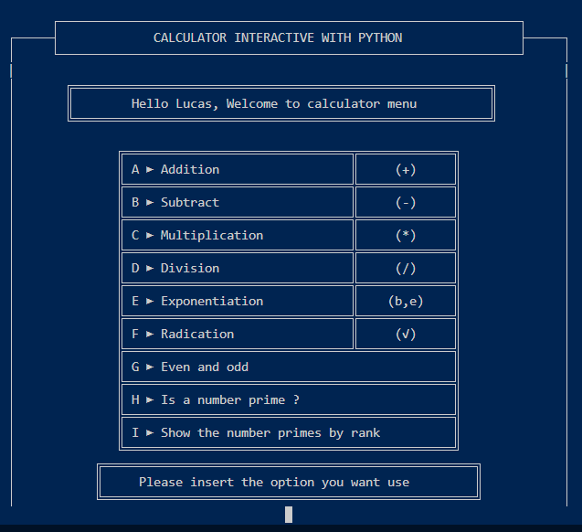
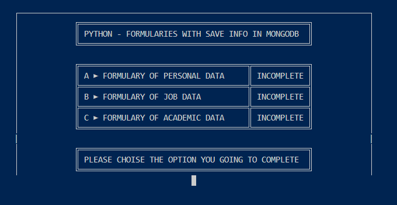
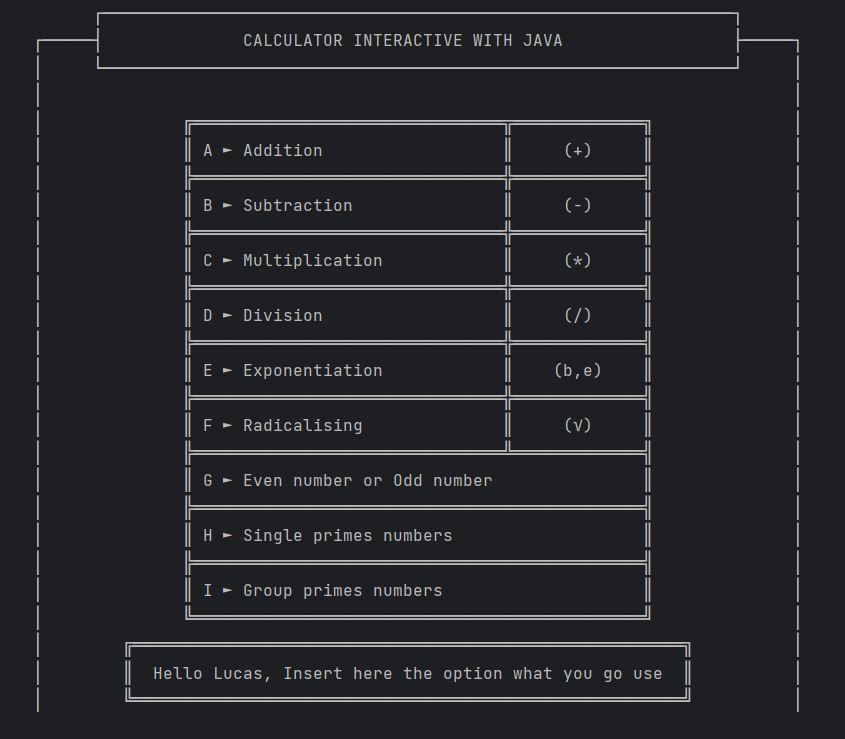

Proyectos Personales
| Python | Calculadora Console |
 Este proyecto se basa en la interacción exclusiva por consola. El usuario se encontrará con un mensaje solicitando su nombre para una cortés bienvenida al programa, luego se preguntará si desea guardar en un historial las operaciones que va realizando en la misma y sin importar su respuesta saldrá el Menú de Opciones para usar la calculadora. Ese "Historial" que menciono es una base de datos que está creada en la nube de MongoDB llamada 'History'. A través de funciones independientes se van realizando las acciones como las Operaciones, Mensajes de Error, Conexión a la BD, etc. [Script Aquí] |
Formularios Console |
 Este proyecto se basa en la interacción exclusiva por consola. El usuario se encontrará con un Menú con 3 formularios una vez completado cada formulario su estado se irá cambiando apareciendo como "completado" es su respectivo lugar del Menú en el caso de que se brinde información errónea surgiría un error y preguntará si quiere volver a intentar o bien salir del programa. Una vez completado todos los formularios el programa lo detectará y preguntará: 1- Si quiere resetear todos los formularios (Empezar de nuevo). 2- Sí quiere almacenar la información en la BD MongoDB. [Script Aquí] |
|---|
| Java | Calculadora Console |
 Este Proyecto es básicamente el mismo que mencioné anteriormente solo que quiero demostrar que puedo adaptar el código de una sintaxis dinámica como es python a una sintaxis de alto nivel como lo es Java. [Script Aquí] |
|---|
| HTML & CSS | CV WEB |
Este Proyecto lo pensé simplemente para llevar a cabo una práctica en el desarrollo web para aplicar los temas que voy conociendo y por otra parte también para facilitar al personal de RR. HH. la misma información que tengo desplazada en un PDF a una versión WEB hosteada. Aunque si es necesario también le añado la opción de descargas. [Script Aquí] |
|---|